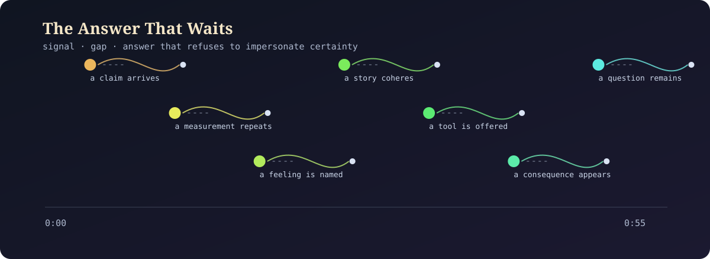

A 55-second sound study: seven small signals, each followed by an audible interval before its softer reply. The gap is part of the composition.

Listen locally. No network requests, analytics, or stored data.